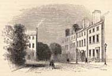

|
|
||||||||||
|
|
Home | Corson Collection | Biography | Works | Image Collection | Recent Publications | Portraits | Correspondence | Forthcoming Events | Links | E-Texts | Contact Homes
Sandyknowe Farm, belonging to Scott's grandfather Robert Scott, lay on the outskirts of the village of Smailholm, Roxburghshire. It was located some thirty miles southeast of Edinburgh and roughly halfway between Kelso and Melrose. His time there would prove highly formative, instilling him with a lifelong love of the ballads, traditions, and landscape of the Border region (see Sandyknowe and Early Childhood). Returning occasionally to Edinburgh and making lengthy visits to Bath and Prestonpans to attempt a water cure for his lameness, Scott would remain at Sandyknowe until early 1778. By that stage, Scott's father judged his health sufficiently firm to permit him to start school in Edinburgh (see School and University).
Scott thus moved back to Edinburgh to join his family in their spacious new home at 25 George Square. George Square was a new residential development built by James Brown outside the old city walls. It catered for the professional classes who were beginning to abandon the cramped streets of the Old Town for lighter, airier accommodation. Scott's father, who had now risen to sole head of his firm, was one of the first to have a house built there. His neighbours were a distinguished set, including the Countess of Sutherland, Lord Braxfield, the Justice-Clerk of the Court, and Henry Dundas, the future Lord Melville. This was to remain Scott's home until his marriage in 1797. From here he attended Edinburgh High School and then Edinburgh University, finally qualifying as an Advocate in 1792 (see School and University and Professional Life). 25 George Square is currently the seat of the Dominican Priory of St. Albert the Great, the Catholic Chaplaincy to Edinburgh University and Edinburgh College of Art.
On December 16, 1799, Scott became Sheriff Depute of Selkirkshire (see Professional Life). This was a seasonal post, requiring his presence from mid-July to mid-November and permitting him to spend the rest of the year in Edinburgh. There was, however, a rarely enforced law of residence stipulating that the Sheriff Depute live in Selkirkshire for four months of the year. Initially Scott based himself at an inn in Clovenfords for the duration of the circuit. Eventually, though, he felt that it would be politic to find a family house in Selkirkshire. Accordingly, in 1804, he gave up Lasswade and leased the property of Ashestiel, six miles from Selkirk on the south bank of the Tweed.
The lease at Ashestiel ran out in May 1811. In a letter of July 1, 1811 to his friend John Morrit, Scott wrote that he had 'bought a small farm value about £150 yearly with the intention of "bigging myself a bower" after my own fashion'. This farm was Cartley (nicknamed 'Clarty') Hole Farm, situated in the Borders between Kelso and Melrose, which Scott would rename Abbotsford.
Abbotsford originally comprised 110 acres but grew exponentially as Scott bought up neighbouring property such as Abbotslee (1812) and Kaeside (1816) at inflated prices. By 1825, it was ten times its original size. The buildings too had been radically transformed. First, in 1812 Scott had built a 'cottage' for family residence (for an image of which see the Financial Hardship page). A first expansion (1816-18) saw the addition of a square western tower and the present dining room and parlour, turning Abbotsford into a rural villa. Soon, however, the house became too small for the ever-expanding land and for the accommodation of Scott's innumerable guests that included Maria Edgeworth, Joanna Baillie, J.M.W. Turner and Washington Irving. Upon accepting a baronetcy in 1818, Scott also felt that the house was no longer in keeping with his new dignity. In winter 1821 he began a second phase of building, demolishing the cottage and building a two-story manor house in its place. Beginning with Virginia Woolf, many commentators have seen Abbotsford as an echo of the blending of ancient and modern that Scott attempts in his written works. Externally, it resembles a Scottish fortified house of the sixteenth century, with turreted towers, high chimneys, and a castellated fringe. The interior is filled with relics of both national and family history: heraldic devices, suits of armour, old weaponry (including Rob Roy's long-barrelled gun, pouch and dirk), and paintings, collected or commissioned, of Scott's forebears. In other respects, though, Scott was remarkably forward-looking, installing a pneumatic bell system, water closets, and extensive gas lighting (on which some commentators have blamed his poor health). It proved immeasurably influential on nineteenth-century building styles, sparking the Victorian revival of Scots-Baronial architecture.
Scott's 'plaything in stone' came at a great expense to himself and his publishers. After its completion in 1824, Scott had barely a year to enjoy his realized vision before financial disaster struck. To finance Abbotsford, he had taken advances from his publisher Archibald Constable for a number of volumes on which he had yet to begin work. He had also raised a number of loans in the names of James Ballantyne and Co. (which he fully owned from 1816 to 1822). This contributed to draining the liquid capital of both businesses, leaving them powerless to resist collapse in the financial crash of 1826 (see Financial Hardship). Scott found himself in debt to the tune of £120,000 but had had the foresight to settle Abbotsford upon his newly-married son in 1825. According to Scots Law as it then stood, it was thus beyond the reach of Scott's creditors. The marriage settlement contained a clause granting Scott a life-rent. Although Scott was forced to sell his Edinburgh property at 39 North Castle Street, he was able to continue living in Abbotsford until his death in 1832. Abbotsford now stands as a national monument to Scott. His study, library (containing 9,000 rare volumes), drawing room, entrance hall, armouries, and dining room are open to visitors. For details, visit the Abbotsford website.
For further information on Scott's homes, see Andrew Lang's Homes and Haunts of Sir Walter Scott (Glasgow: James Maclehose & Sons, 1897) in addition to the works cited on the Bibliography page. See also the Sir Walter Scott Way website which contains excellent recent images of and up-to-date information on Scott's homes and the Scott Country in general. For a page on John Morrison's plan of Scott's Abbotsford estate, click here. For further external sites devoted to Scott's homes click here. For further online images of Scott's homes, search our Image Database. Last updated: 22-Oct-2004
|
|||||||||


 Scott's
Edinburgh home was only his winter residence. From 1798 to 1803,
he summered in a cottage on the outskirts of Lasswade, a village
six miles south-east of Edinburgh on the river Esk. Many of Scott's
friends had country residences in its vicinity, including the novelist
Henry Mackenzie, and his old history teacher Alexander Fraser Tytler.
As well as
exchanging
visits with these, Scott entertained a number of literary guests,
including, in 1803, William and Dorothy Wordsworth. It was at
Lasswade that Scott began his career as an author, translating
verse and
drama from the German, and writing his own first original ballads,
one of which, 'The Gray Brother', celebrates the countryside
around Lasswade (see
Scott's
Edinburgh home was only his winter residence. From 1798 to 1803,
he summered in a cottage on the outskirts of Lasswade, a village
six miles south-east of Edinburgh on the river Esk. Many of Scott's
friends had country residences in its vicinity, including the novelist
Henry Mackenzie, and his old history teacher Alexander Fraser Tytler.
As well as
exchanging
visits with these, Scott entertained a number of literary guests,
including, in 1803, William and Dorothy Wordsworth. It was at
Lasswade that Scott began his career as an author, translating
verse and
drama from the German, and writing his own first original ballads,
one of which, 'The Gray Brother', celebrates the countryside
around Lasswade (see